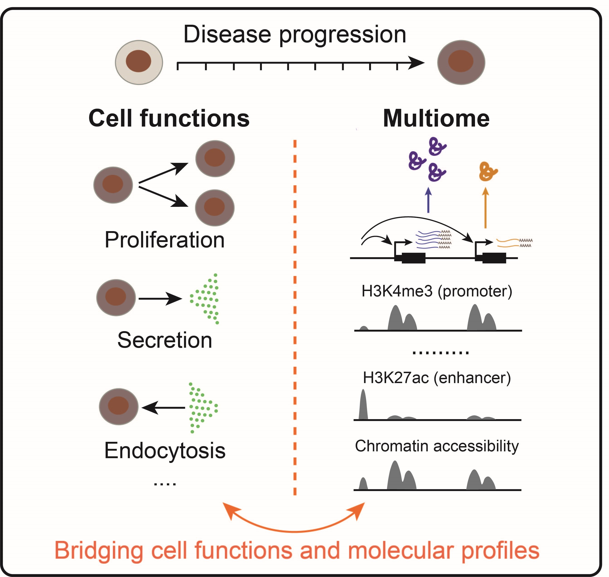
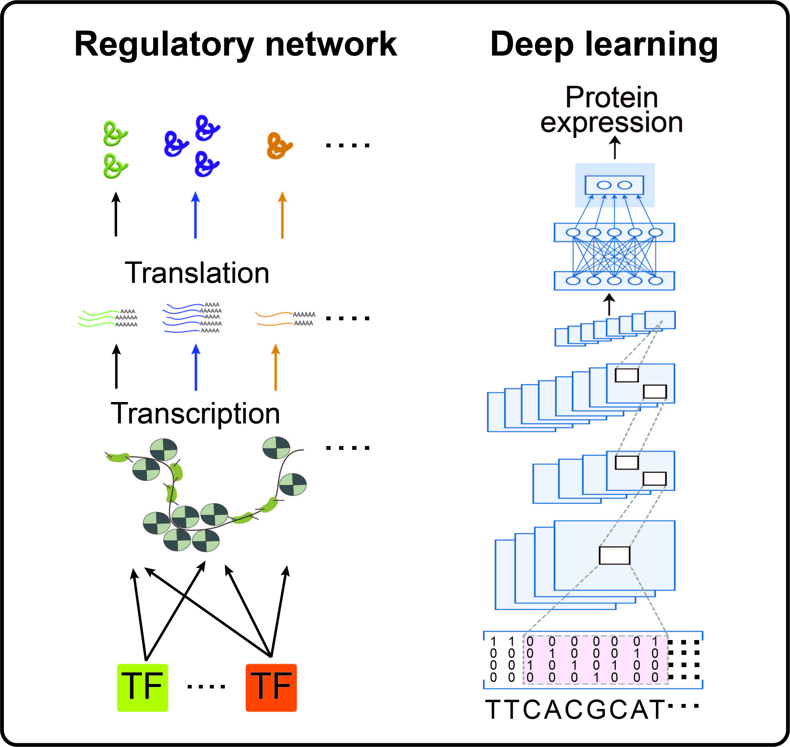
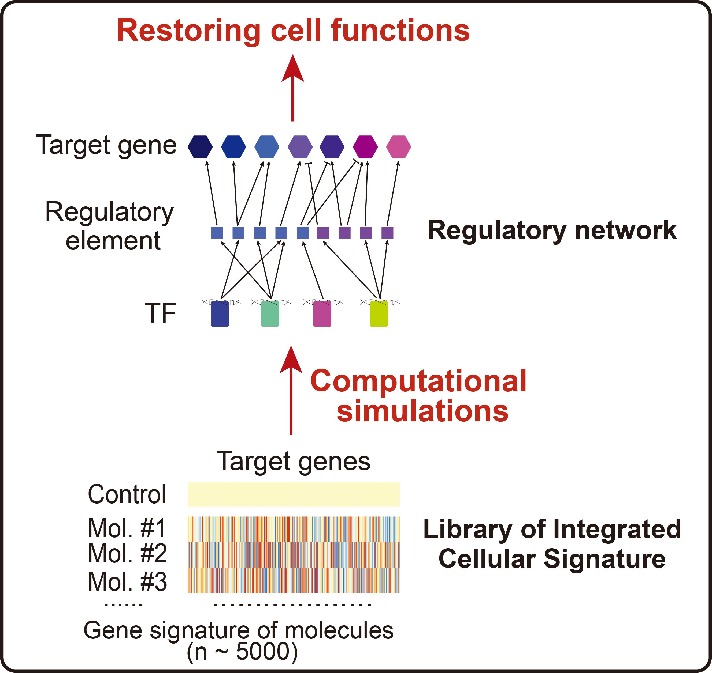

Laboratory of Complex Disease and Quantitative Biology
Research Interests
To develop effective prevention, diagnosis, and treatment strategies for disease, it is crucial to gain a comprehensive understanding of the molecular principles and mechanisms governing cellular transformations in disease progression. However, the staggering complexity of intracellular molecules and interactions presents a formidable challenge to revealing these principles and mechanisms. In our laboratory, we adopt an integrative approach that combines experimental, computational, and theoretical techniques to address this challenge. Our goal is to quantitatively and predictively understand and control disease at the molecular level. Currently, we are focusing on diabetes and leukemia.
Quantifying changes of cell functions and molecular profiles during disease progression

Dysfunction and dysregulation of cells are hallmarks of disease. In our research, we quantify cell functions (e.g. cell proliferation, secretion, endocytosis) and molecular profiles (e.g. epigenome, transcriptome, proteome) across different disease states. By analyzing these comprehensive measurements, we identify principles that quantitatively link cell functions and molecular profiles during disease progression. This connection enables us to reveal the molecular signatures that determine cell functions.
Identifying molecular mechanisms that underlie cellular changes in disease

To identify the molecular mechanisms underlying cellular dysfunction and dysregulation in disease, we combine epigenomic, transcriptomic, and proteomic data to infer a gene regulatory network (GRN) that includes transcription factors (TFs), TF-binding regulatory elements, and target genes of TFs. We also use deep learning to explore how the GRN is encoded in the genome. By analyzing the GRN and deep neural network, we can identify the molecular mechanisms that drive disease progression.
Predicting molecule combinations for restoring gene regulatory programs and functions of cells

We use tools and concepts from dynamical systems to simulate the inferred GRN. By integrating it with a publicly available catalog of cellular transcriptomic signature perturbed with small-molecule compounds, we simulate the dynamics of GRN upon molecule perturbations and predict optimized molecular combinations that restore gene regulatory programs and cellular functions from disease state to normal control. This enables us to identify potential therapeutic interventions for diseases.